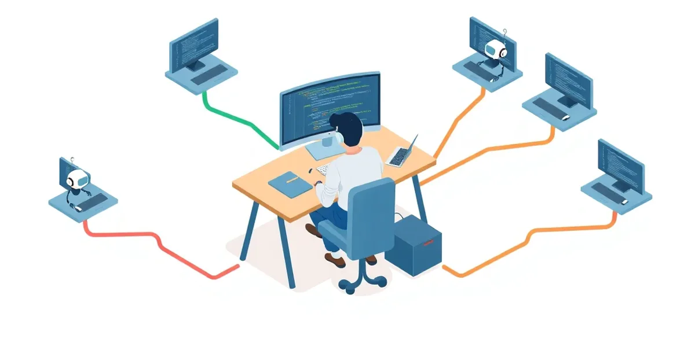

🔀 Développement parallèle avec agents IA
Comment faire travailler plusieurs agents de code sur le même projet sans tout casser.

Beaucoup de développeurs m'ont posé la question : « Comment tu fais pour utiliser plusieurs agents en parallèle sur un même projet ? » Ce guide est ma réponse : un retour d'expérience, avec les solutions techniques testées et les workflows qui fonctionnent.
L'objectif n'est pas de lister tous les outils du marché, mais de donner une méthode pour passer de « un agent à la fois » à « plusieurs agents en parallèle » sans perdre le contrôle. Les outils changent vite ; la méthode (isoler, spécifier, relire) reste.
Trois façons de paralléliser en 2026
🎯 Ce que vous allez apprendre
- Isoler chaque agent avec Git Worktree, à la main ou avec les options natives des outils
- Superviser plusieurs agents avec un multiplexeur terminal ou un outil d'orchestration
- Structurer le contexte avec des conventions partagées (AGENTS.md) et des specs versionnées
- Choisir entre sous-agents, sessions locales et agents cloud
- Mener le workflow complet, de la préparation à l'intégration par pull request
- Éviter les pièges courants et comprendre pourquoi la relecture limite le passage à l'échelle
📑 Plan
- Le problème à résoudre
- Git Worktree
- Supervision avec un multiplexeur
- Contexte et specs
- Paralléliser dans une session : les sous-agents
- Agents en arrière-plan dans le cloud
- Workflow complet
- Spécificités Windows
- Les pièges à éviter
- Comprendre les limites humaines
- Références et annexes
Guide écrit en décembre 2025, mis à jour le 8 novembre 2026. Les commandes ont été vérifiées sur la documentation officielle à cette date.